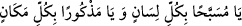
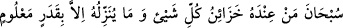
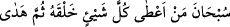
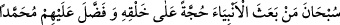

etmeye başladılar ve onların arı vızıltısı gibi inledikleri işitildi. Sonra Hz. Peygamber
taşları Hz. Ömer’in eline, o da Hz. Osman’ın eline koydu, taşlar tesbih getirdiler ve her
defasında arı vızıltısı gibi inlediler.[96]
Abdullah Kurtubî şunları zikretmiştir: Dâvud (a.s.) “Bu akşam Allah Teâlâ’yı
yarattıklarından hiç birinin yapmadığı bir tesbihle tesbih edeceğim.” dedi. Evinin su
kanalından bir kurbağa ona şöyle seslendi: “Tesbihinle Allah’a karşı böbürleniyor
musun? Ben yetmiş senedir sürekli Allah’ı zikrediyorum. İki kelimeyle meşguliyetimden
dolayı on gecedir ne bir lokma yedim ne de bir yudum su içtim.” Dâvud (a.s.): “Nedir o
kelimeler?” diye sordu. Kurbağa: “O kelimeler şunlardır:
“ Yâ müsebbehan bi külli lisân ve yâ mezkûran bi
külli mekân.” = Ey her dilde tesbih edilen ve her yerde zikredilen Allah’ım!” Bunun
üzerine Dâvud (a.s.) kendi kendine “Belki de ben bundan daha özlü bir şey
söyleyemezdim.” dedi.
Şeyh Ebû Amr tevbesinin sebebini şöyle zikretmiştir: Bir gece sırtüstü uzanmış
yatıyordum. Gökyüzünde beş tane güvercin gördüm. İçlerinden birincisi;
“ Sübhâne men indehû hazâinü külli
şey’ ve mâ yünezzilühû illâ bi-kaderin ma’lûm = Her şeyin hazineleri yanında olan
ve onu belirli miktarda indiren Allah’ı her türlü noksanlıktan tenzih ederim” diyordu.
İkincisi; “ Sübhâne men a‘tâ külle şey’in halkahu
sümme hedâ = Her şeye yaratılışını veren sonra da doğru yolu gösteren Allah’ı
tenzih ederim” diyordu.
Üçüncüsü; “Sübhâne men bease’l-
enbiyâe hucceten alâ halkihî ve faddale aleyhim Muhammed (s.a.) = Yarattıklarına
hüccet olarak peygamberleri gönderen ve Muhammed (s.a.)’i onlara üstün kılan
Allah’ı tenzih ederim” diyordu.
Dördüncüsü; “Allah ve Rasûlü için yapılanlar müstesna dünyadaki her şey bâtıldır”
diyordu.
Beşinci güvercin, “Ey gaflet ehli! Kerîm olan, bol bol veren ve büyük günahları
bağışlayan Rabbinize itâat için kalkın” diyordu.
Bu sözü duyunca kendimden geçtim. Kendime geldiğimde kalbimin dünya sevgisinden
uzaklaştığını hissettim. Sabahleyin nefsimi bir mürşide teslim etmek için yola koyuldum.
Heybet ve vakar sâhibi bir şeyhle karşılaştım. Kendisine selâm verdikten sonra yemin
vererek kim olduğunu söylemesini istedim. O da şöyle dedi: “Ben Hızır’ım. Bir gün
zamanın âriflerinin sultanı Abdülkadir Geylânî’nin yanındaydım. Bana şöyle dedi:
“Ey Ebü’l-Abbâs! Bir adama ilâhî cezbe isâbet etti ve gökyüzünden kendisine
“Merhaba ey kulum!” diye seslenildi. O kimse kendisini bir şeyhe teslim edeceğine dair
Allah’a söz verdi. O kimseyi bana getirir” dedi. Sonra Hızır bana: “Sana ondan
ayrılmamanı tavsiye ederim” dedi. Sonra kendimi Bağdad’da buldum. Orada Şeyh